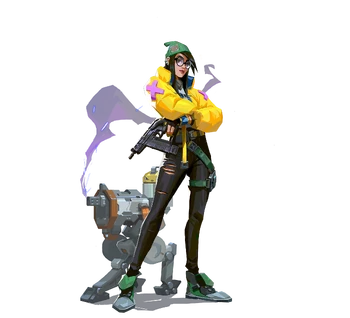

| Klara Böhringer es una inventora de Alemania que nació de un padre con ascendencia germánica. Böhringer, nominada para el premio Inventor Distinguido, se convirtió en la líder del departamento de I+D de Kingdom a la edad de 18 años. Increíblemente exitosa, tuvo muchos avances durante su tiempo en Kingdom con varias de sus creaciones e innovaciones.[1] Böhringer fue el cuarto agente en unirse al Protocolo VALORANT como "Aguafiestas". Obtuvo su distintivo de llamada después de que su equipo lo usó inicialmente para complementar sus habilidades sobresalientes que redujeron la cantidad de trabajo que tenían que hacer los demás, y Klara decidió mantener el apodo. Killjoy ahora continúa su trabajo innovador como agente de VALORANT y protegida del comandante de la organización, Brimstone. Desde inventar desactivadores de picos bajo la presión de una detonación entrante hasta construir teletransportadores para el transporte entre mundos, cualquier dispositivo que el Protocolo necesite para cualquier propósito: con las herramientas adecuadas, Killjoy puede hacerlo. |
 |